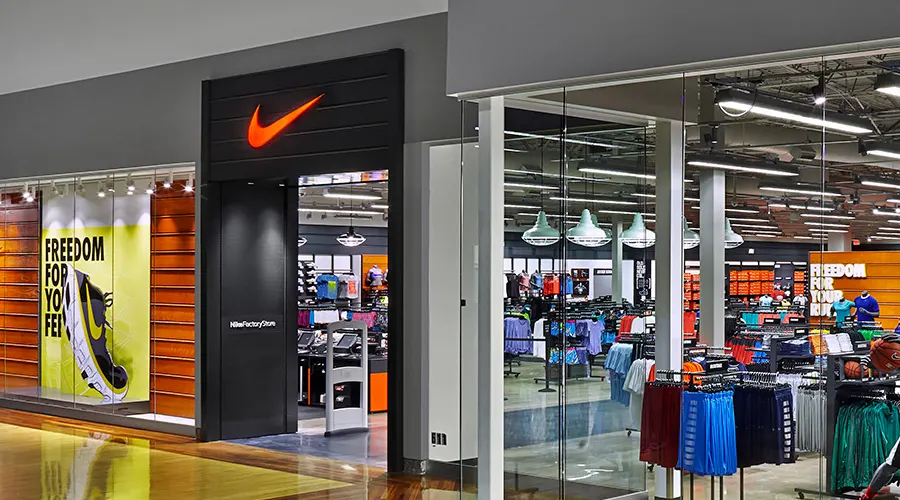
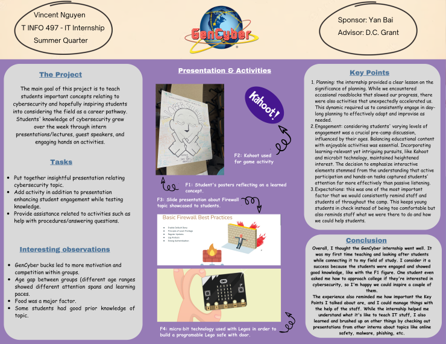

My Work Experience
Over the past year, I have had the privilege of working on
two transformative projects that have honed my skills in both
front-end and back-end development. As a Software Engineer at
the YMCA, I developed a Stall Management System that modernized
facility operations by introducing real-time data tracking and
secure online processes. Following that, I engineered an Asset
Management System for Port Madison Enterprise, where I streamlined
device management and optimized user interface design.
These experiences have strengthened my expertise in web technologies
and user-centric design, positioning me to deliver impactful,
efficient solutions.
December 2020
Sales Associate

Since December 2022, I have worked as a Retail Associate at Nike, delivering top-notch customer service in
a fast-paced environment. I assist customers by providing in-depth product knowledge, ensuring they make
informed purchasing decisions, and maintaining a positive shopping experience. I also manage merchandise
displays, restock inventory, and ensure that the sales floor is organized and visually appealing. By actively
addressing customer needs and offering personalized recommendations,
I help enhance customer satisfaction and contribute to the store's operational success.
January 2024
Teaching Assistant

During my GenCyber Internship as a Teaching Assistant, I played a pivotal role in developing and
delivering a cybersecurity curriculum. Over the course of 10 weeks, I taught over 50 students per session,
covering critical topics such as malware prevention and firewall applications. By refining the teaching methods
and implementing student feedback, I contributed to a significant improvement in student performance, raising
average assessment scores from 38% to 81%.
This experience not only deepened my technical knowledge but also enhanced my ability to communicate complex
concepts effectively.